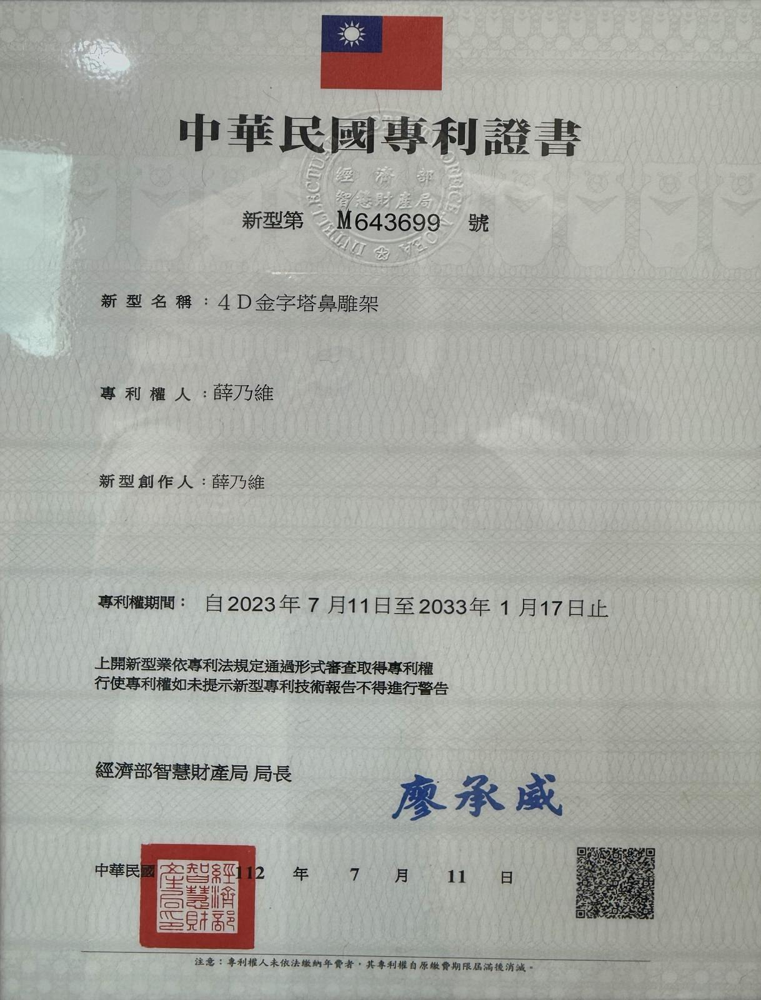

TMIAS 微整學院・大師淬煉系列
薛乃維醫師親授
鼻埋線工作坊
特管時數 4 小時・現場實作演示・醫師限定
立即報名 ＋限量名額
- 6hands-on 實作名額（先報先得）
- 15observer 觀摩名額
- 已報名 2 名（截至 2026-09-30・每週更新）
名額數字即報名表實際名額。
講師
薛乃維醫師
- 專科別：顏面整形外科專科
- 診所：維序妍診所
- 學會角色：學會講師
- 手術量：5,000+ 例
第一屆・首發場
大師淬煉系列第一屆——本場即首發，您的回饋將是下一屆的證明。
講師實績：顏面整形外科專科・學會講師・5,000+ 例

課程議程
- 埋線觀點下的鼻部解剖結構
- 各種鼻型臨床評估與預判決策
- 鼻背埋線各式技巧
- 各種鼻型的設計
- 鼻埋線搭配玻尿酸的套組可行性
- 埋線併發症與處理技巧
- 行銷端的應用以及諮詢
- 高階鼻埋線的觀念
- hands-on
- Q&A
報名後由主辦單位確認名額;hands-on 名額先到先獲得。